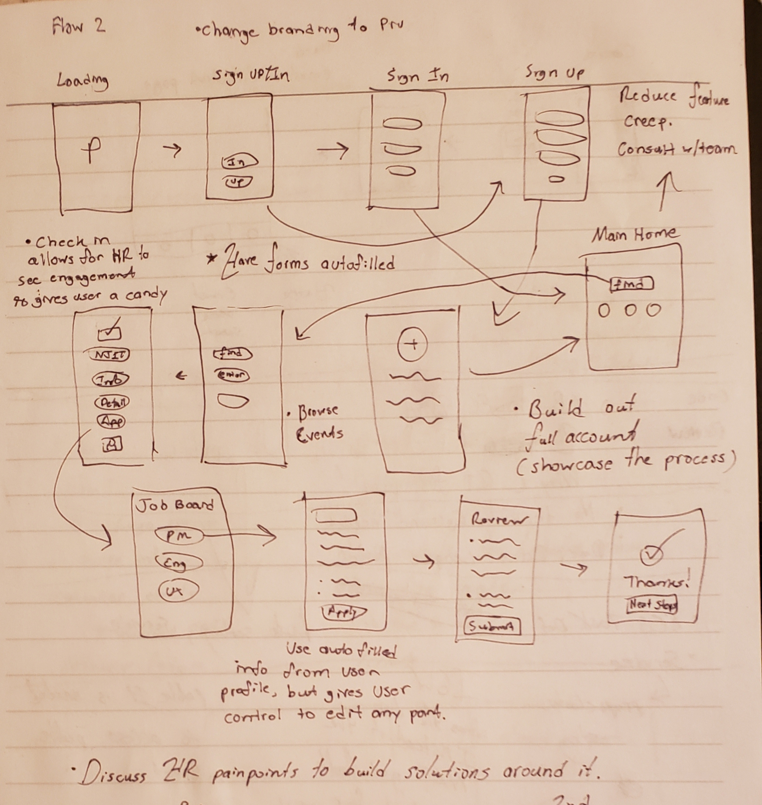

Role: Product Designer/Product Owner
Tools: Adobe Xd, Microsoft Office Products, Miro
Responsibilities: Product Design, Conceiving Product Vision, User Testing
PruHire: An app with the purpose of creating more meaningful experiences for students during the recruiting season.
Summary:
How do we make the recruiting and onboarding experience for students and HR better? That’s where PruHire comes in to improve these experiences for both parties. We wanted to focus on creating a product that creates transparency and autonomy for both students at HR.
Motivating Problem:
HR prosposed the project topic, which was to create a way to making the recruiting and hiring process for students more automated and more "tech-forward. They also wanted better ways of leveraging technology to have better tracking systems and more meaningful analytics when recruiting at various universities.
Process:
Week 1: Creating solution and product strategy and facilitating roles
When the team formed, we started to brainstorm how we wanted to tackle this problem. We first shared our own experience attending career fairs. We documented how we felt the lines were “overwhelming and overcrowded,” “lack of personalized interaction,” and “Prudential doesn’t visit all schools, making it for students who are interested to get involved.”
We students are the potential users of this product. However, we also briefly interviewed other students and HR employees to better understand their pain points when it comes to hiring season. This was essential in trying to find overlapping problems and inconvenience we've had while attending these events. This allowed us to better design and create something that would help remedy these issues. We silo'd these problems into the following:
I was the product designer for this project with no prior experience doing product design. This was an exciting challenge for me to learn and execute in this exciting role. In my previous experiences working on products, I was more responsible for the facilitation and execution of a product vision. In this project, I was very active and engaged in creating this prototype from start to finish.
I took the feedback and data that we collected and tried creating some early interactive prototypes of what PruHire could be. Because I was inexperienced, I felt that I should've spent more time on the lo-fi wireframes because I transitioned too fast into hi-fi. The first video is earliest concept of it being an app to be used by any company where students can view them and learn more about the opportunities available. These first iterations would later be shipped to our first round testers.
Week 2: Feedback, testing review, iterating
During this week, I wanted to focus on feedback and understanding what college students, HR employees, and hiring managers think of our concept.
To have a broad understanding of customer who would use this product, we conducted to phases of interviews with our stakeholders (students and HR). During our phase phase of the interview, we received various feedback regarding the design system colours used in the product as well as some of the missing functionality.
In total we had around a dozen testers for the first iteration testing. A lot of the feedback they shared was how the flow seemed fluid, however, the visual design needed massive improvement. While we were using the Pru Design System colors, many users didn't feel that this is a "Pru app." They thought the colors were too saturated. They also felt the navigation was limited with no bottom navbar along with poor screen space usage.
Furthermore, the core functionality of applying to jobs seamlessly utilizing the email or LinkedIn info wasn't present and users didn't fully understand the scope of this app. I had to update the information architecture flow. The video below is the updated version of our prototype based on the first round of feedback we received.

Week 3: Feedback round 2, testing review, iterating
In preparation for our second round of testing. We really focused on the feedback we received and wanted to make sure we incorporated as much as we could. While we got a lot of suggestions of additional features to add, we have to prioritize our scope and not get locked up in "feature creep." We wanted to focus primarily on the core functionality, that is letting students have the ability to have more autonomy in the recruiting process, whether it's applying seamlessly, seeing when their interviews are scheduled, viewing the stages in the hiring process or reaching out to recruiters if they couldn't do it in person.
After we received our results from a different batch of around a dozen testers, we regrouped as a team to focus on the next iteration. Testers enjoyed the incorporation of a bottom navbar, and thought the core functionality of applying to jobs made a lot of sense A lot of feedback was aimed towards the branding. They felt the branding wasn't there still. They didn't see the incorporation of a Pru logo and still didn't feel the yellow made sense with the rest of the dark themed colors. Also the space usage in certain pages still felt bare such as the home screen.
Week 4: Final draft MVP 1 and presentations
For the final week, we had to finalize our MVP for our live demo presentation. We focused on making sure the core functionality of applying to Pru-related jobs seamlessly was finalized along with its supplementing feature. We took the feedback we received on the second round of testing and wanted to incorporate the branding identity problem and the screen usage concern. The first video is through a student perspective and the access they have. The second video is through the HR perspective, and it has certain features that's unique to them such as the data analytics portion will drilled down features.
Features
Analytics: We wanted to provide HR more meaningful analytics that will enable them to make better decisions when it comes to their recruiting strategy. For example, by seeing engagement across different universities, their able to see contrasting silos for what university generates lots of applicants in general or per business unit. They’re able to make more data driven decisions based off the engagement analytics so that they can adjust their strategy. Furthermore, there are drilled-down analytics options that allow recruiters to have more precise analytical understanding of their engagement per school, per business unit and per role. This is a powerful tool because it gives a full scope of understanding from the most broad to the most granular of data.
Status Tracker: HR can view the progress of applicants and see what their current status for the jobs they’ve applied to. This also allows recruiters to communicate with students and hiring managers more effectively because they’re able to see in sync what the current timeline is for a candidate.
KPI(s): There was little discussion about the KPIs for this app. However, if there were to be any, it would have to looking at how many people are using it to apply to Pru jobs. Does this gateway to the Pru ecosystem show active usage? How many people are viewing and applying Pru jobs through PruHire? This would enable product owners to see whether this product serves its niche on whether prospect hires would use this product to apply to Pru jobs.
Conclusion/Limitations:
The sponsors of the project were very pleased with our work during our live demo, and felt that it was really comprehensive and could be a potential project in the future. For me personally, this was my first ever exposure to product design. I learned a lot from myself and others who were kind enough to give me their feedback and teach more about this discipline. The main takeaway I got was having thick skin to listen to your users and building for their needs because ultimately, they're your "customers," the people who are using the product, not so much yourself. Overall, this was a great introduction to product design and I thoroughly enjoyed it and had tons of fun working on it!
The deliverable was an interactive prototype. There wasn’t an actual app. If this app were to be used, it would have to be developed since there was no actual code supporting this project. While it’s uncertain whether HR would actually roll through with this product, it has generated some partial conversation. Some limitations of this product is that the sample size of testers was less than 20 in total for both rounds of iteration. In addition, the full backend functionality of the product hasn’t been explicitly determined. There were ideas of utilizing AWS S3 service to host the backend data. Because this was a side project on top of the work we interns have on for our day job, the amount of time dedicated could’ve been more.